Choose your book to see the answers.
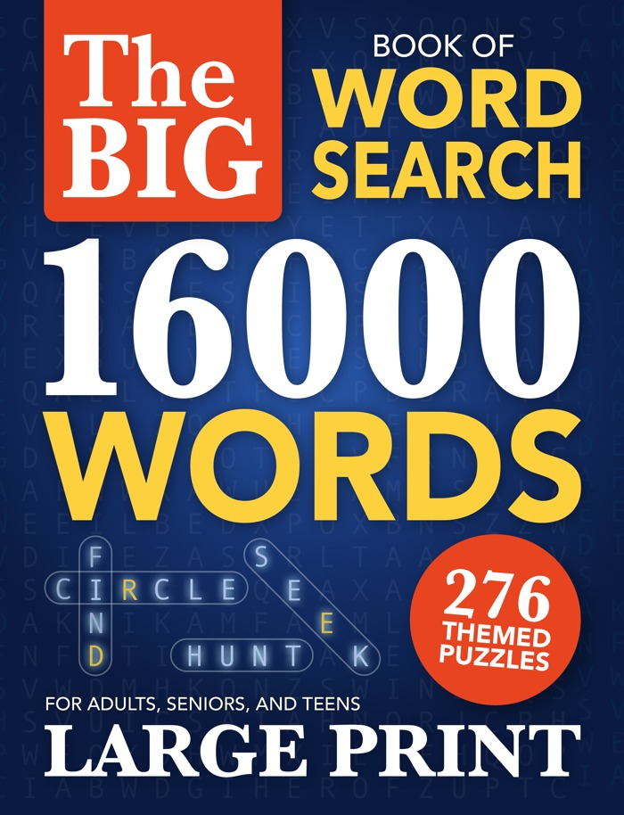
16,000 words · 276 puzzles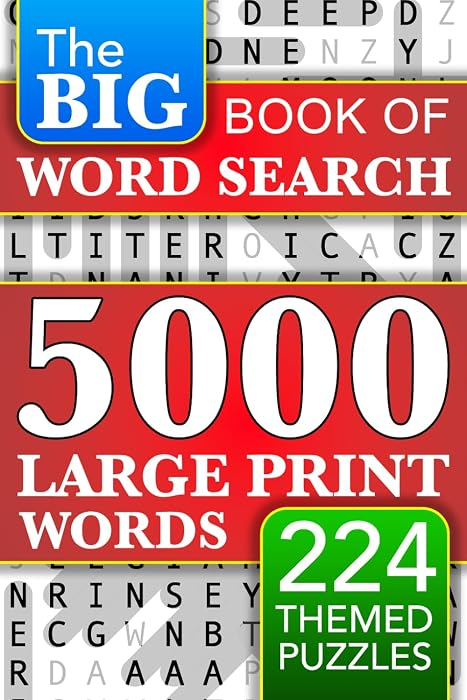
Big Book · 5000 words 2 editions Español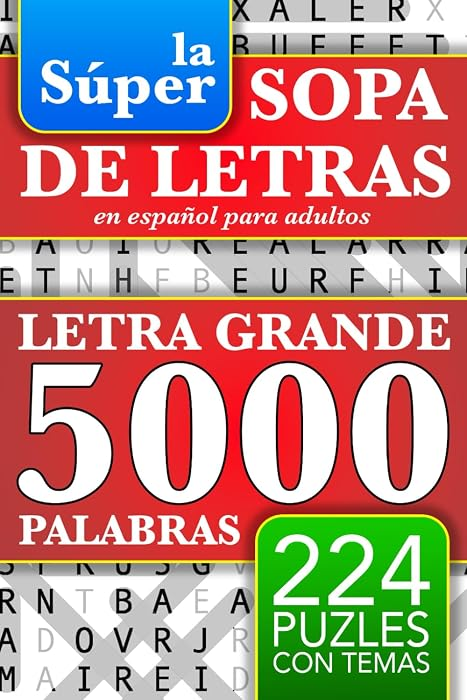
Sopa de letras · 5000 palabras Deutsch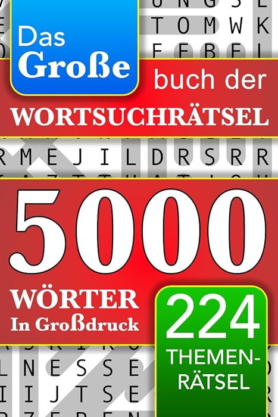
Wortsuchrätsel · 5000 Wörter Français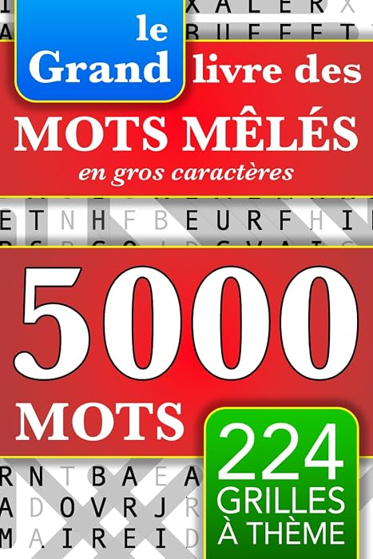
Mots mêlés · 5000 mots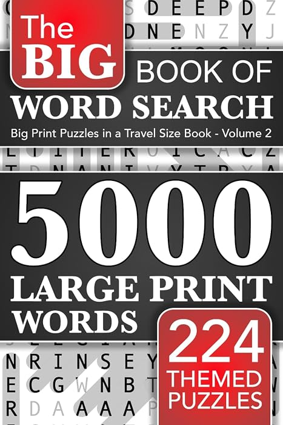
Another Big Book · 5000 words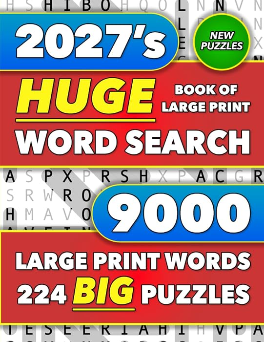
Huge Book · 9000 words 3 editions Español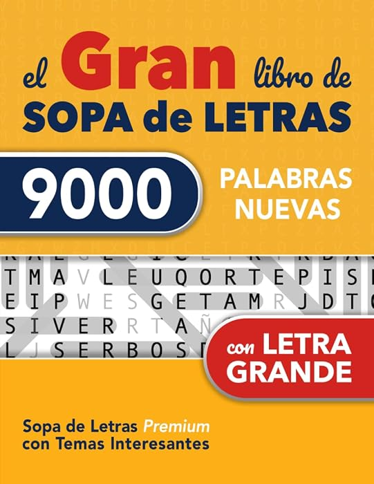
Sopa de letras · 9000 palabras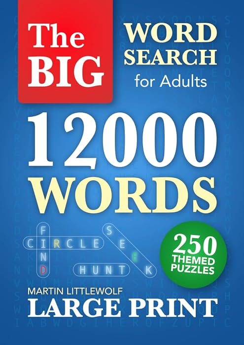
Big Word Search Book · 12000 words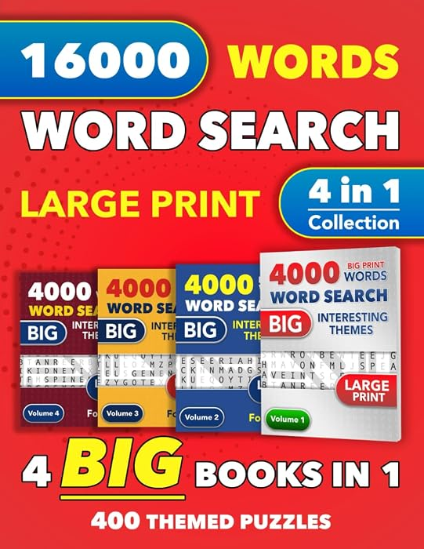
4-in-1 Collection · 16000 words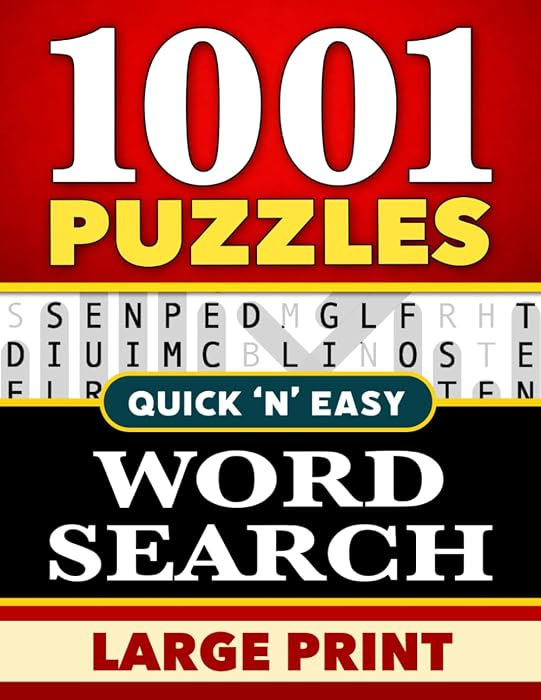
1001 PuzzlesThis HUGE book packs in twice the standard number of words - all while keeping the text LARGE PRINT and easy to read.
Great for quiet hours spent at home or as a long lasting travel companion - Happy Puzzling!
That’s what you get with this 4-in-1 collection of word search books.
Long lasting fun with a quality you can count on - Happy Puzzling!
The Big Book of Word Search uses a clever layout to pack 5000 large print words and 224 puzzles into a travel size book.
This means it's comfortable to hold, convenient to carry, easy to read, and gives great "miles per gallon".
A comfortable, easy to read word search book with 224 unique and interesting themes - Happy Puzzling!
Volume 2 of the Big Book of Word Search uses the same clever layout to pack 5000 large print words and 224 puzzles into a travel size book.
This means it's comfortable to hold, convenient to carry, easy to read, and gives great "miles per gallon".
Happy Puzzling!
This HUGE book gives you three times the standard number of words - all while keeping the text LARGE PRINT and easy to read.
Esto significa que es cómodo de sostener, fácil de llevar y de leer, y ofrece un gran “rendimiento por página”.
¡Diviértete con los Puzles!
Este libro premium incluye el doble de palabras que uno estándar, manteniendo siempre la LETRA GRANDE y fácil de leer.
Ideal para entretenerse tranquilamente en casa o como acompañante de larga duración para tus viajes. ¡Disfruta de cada palabra!
Das große Buch der Wortsuchrätsel nutzt ein cleveres Layout, um 5000 groß gedruckte Wörter und 224 Rätsel in einem handlichen Reiseformat unterzubringen.
Dadurch liegt es angenehm in der Hand und lässt sich bequem mitnehmen.
Ein handliches, leicht lesbares Wortsuchrätselbuch mit 224 einzigartigen und interessanten Themen – viel Spaß beim Rätseln!
Le Grand Livre des mots mêlés utilise une mise en page ingénieuse pour réunir 5 000 mots en gros caractères et 224 grilles dans un livre au format facile à emporter.
Il est ainsi agréable à tenir, pratique à transporter et facile à lire..
Un livre de mots mêlés agréable et facile à lire, avec 224 thèmes uniques et intéressants — Amusez-vous bien !
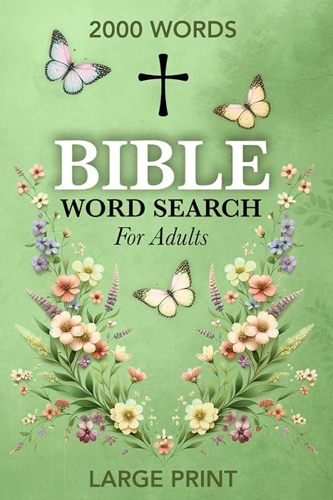
Large Print Bible Word Search Book - 84 Puzzles to keep your brain fit and improve vocabulary.
These well chosen Bible verses encompass the whole Bible and its famous messages of hope, love and redemption. A Christian word search with a Christian message.
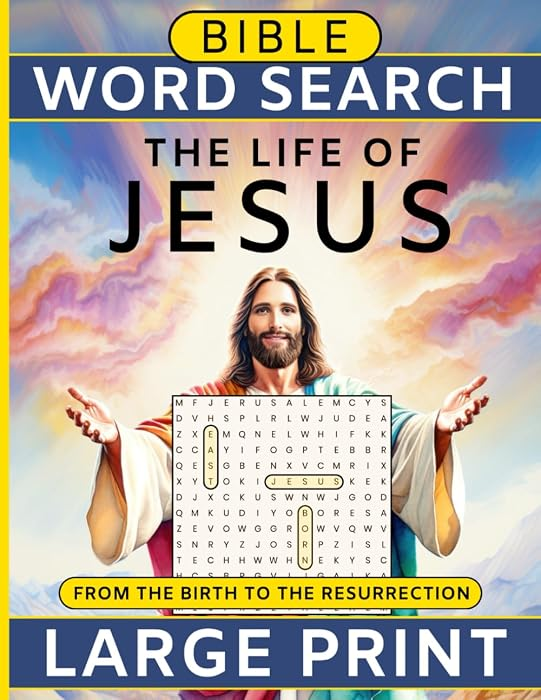
“The angel said to them, 'Don't be afraid, for behold, I bring you good news of great joy which will be to all the people. For there is born to you, this day, in the city of David, a Savior, who is Christ the Lord.” Luke 2:10-11
Immerse yourself in a word search book that tells the story of Jesus Christ.
Features:
Beautiful scripture, large print word search puzzles, and the greatest story we know. Rediscover “The Life of Jesus”.
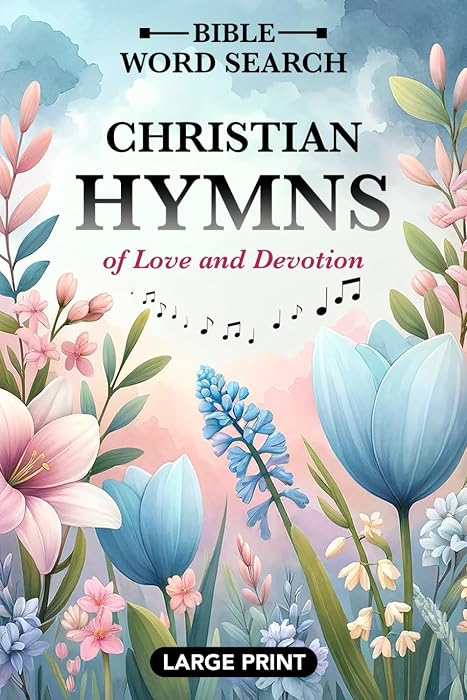
For countless generations, in countless churches and choirs, the faithful have sung their praises to the Lord.
Now, many of these beautiful hymns - rooted in classic chorale worship - have been collected and used as the basis for engaging word search puzzles.
"Christian Hymns of Love and Devotion" is a beautiful word search book that is easy to read, easy to hold, and full of exuberant joy.
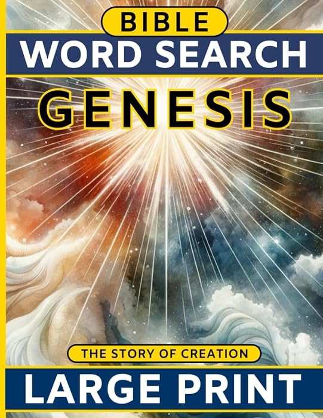
“In the beginning, God created the heavens and the earth.” Genesis 1:1
Immerse yourself in a word search book that tells the story of Creation.
Features:
Rediscover the very story of our Beginnings.
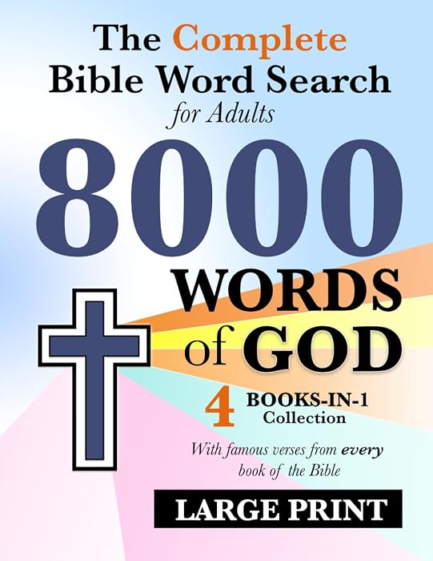
Combining a series of four smaller books: The Alpha and the Omega, Ancient Kings, Prophets of Old, and Lord of Lords - 8000 Words of God will take you on a great journey from Genesis to Revelation, inspiring you with new thoughts, stirring old memories, filling you with curiosity, as well as challenging your focus and expanding your vocabulary.
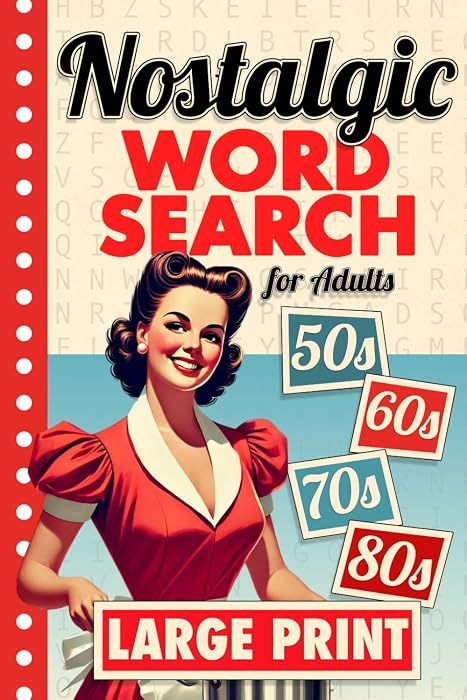
Take a trip down memory lane and explore iconic moments of the 20th-century with 84 nostalgic word search puzzles.
Relive the magic of the 1950s, 60s, 70s, and 80s — from historic events to world changing inventions.
Nostalgic Word Search — a wonderful gift for history lovers and puzzle enthusiasts alike.
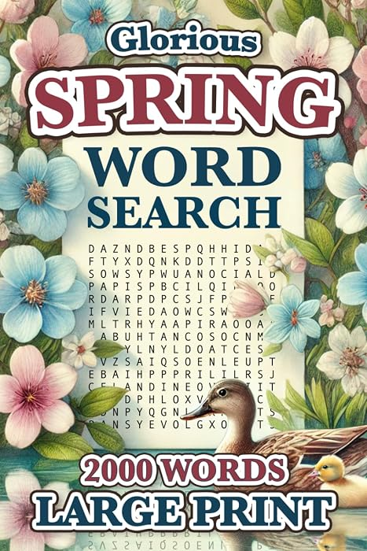
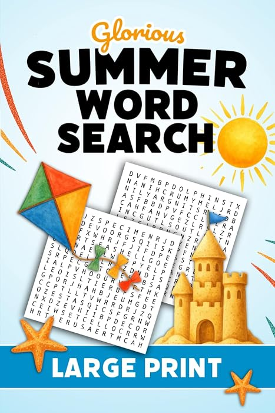
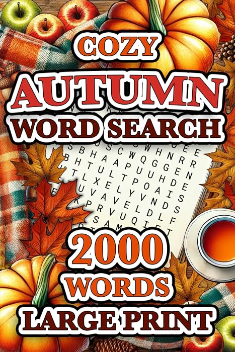
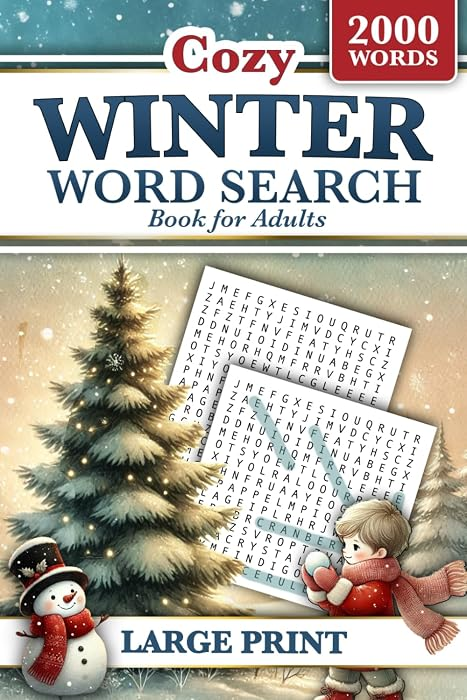
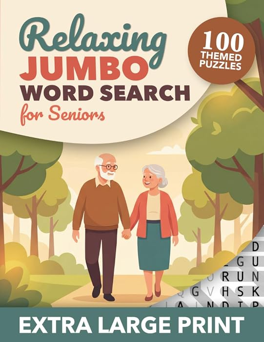
This collection is built around the kind of calm, old-fashioned relaxation older adults know well after a life of hard work: simple pleasures, peaceful routines, and familiar moments that feel real.
Warm, familiar, and easy on the eyes, this is a relaxing puzzle book for seniors who appreciate life’s quieter pleasures.
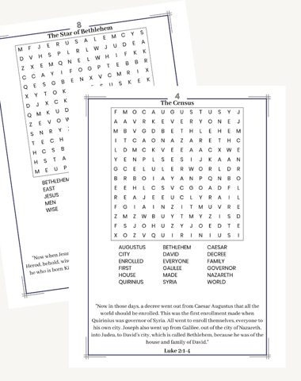
We're always discounting our books, whether it's an old favourite or a brand new release. Sign up to keep up with all the news and discounts. No more than a couple of emails a month, and you can stop any time.
By subscribing, you agree to receive book news and discounts from Martin Littlewolf. We store your email address and signup date. Unsubscribe any time.